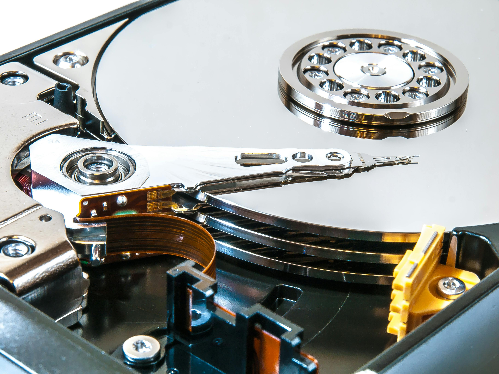
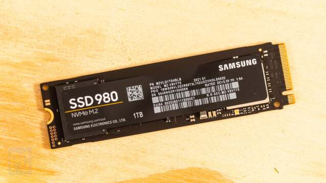

Vad är ett Hårddisk?
Det Hårddsik som sparar all data, den sparar programer, filer. Det finns två typer av hårddisk: mekaniska hårddiskar(HDD) och solid state-diskar(SSD)
HDD och SDD
-
HDD
-
Har mekaniska skivor och rörligt läs och skrivhuvud.
- Fördelar: Den är billigt , tillängliga i stora kapaciteter.
- Nackdelar: Har långsamt hastighet med högre energiförbrukning jämfört med SDD
-
-
Eftersom man använder ett flashminne med den för att lagra data så är den snabbare och mer tålig
- Fördelar: Har mindre energiförbrukning jämfört med HDD samt snabbare starttider och överförningshastigheter.
- Nackdelar: SDD är dyrt med mindre lagringskapacitet.
SDD


Miljö:
Eftersom SDD är mer energieffektiva än HDD så bidrar det till mindre elförbrukning vilket minskar miljöpåverkan över tid. Men det kräver avancerade material för tillverkning av SDD vilket kan ha intial miljöpåverkan jämfört med HDD
Rekomendationer:
-
För Kontor:
-
En SDD med 256GB kan vara en bra val, det kan räcka för operativsystem och program.
-
För gaming:
-
Man behöver snabba laddningstider och plats för spel, det rekomenderas en SDD på minst TB.